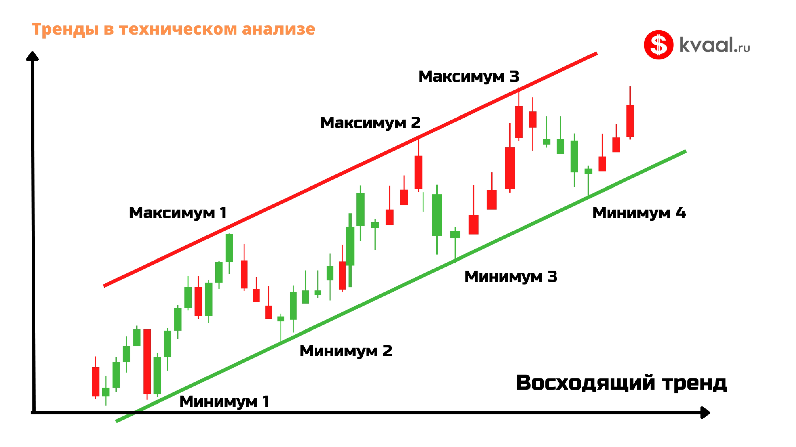
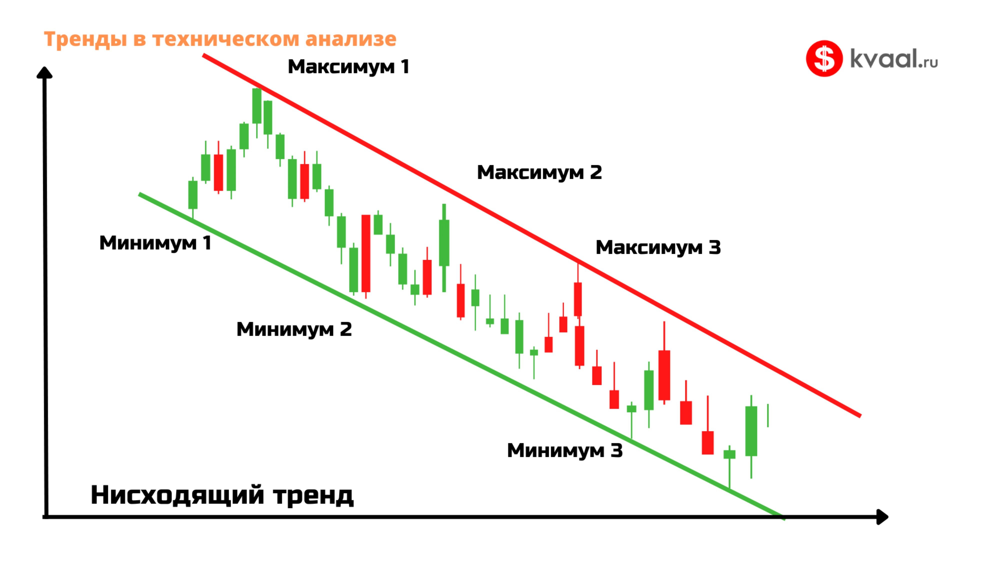
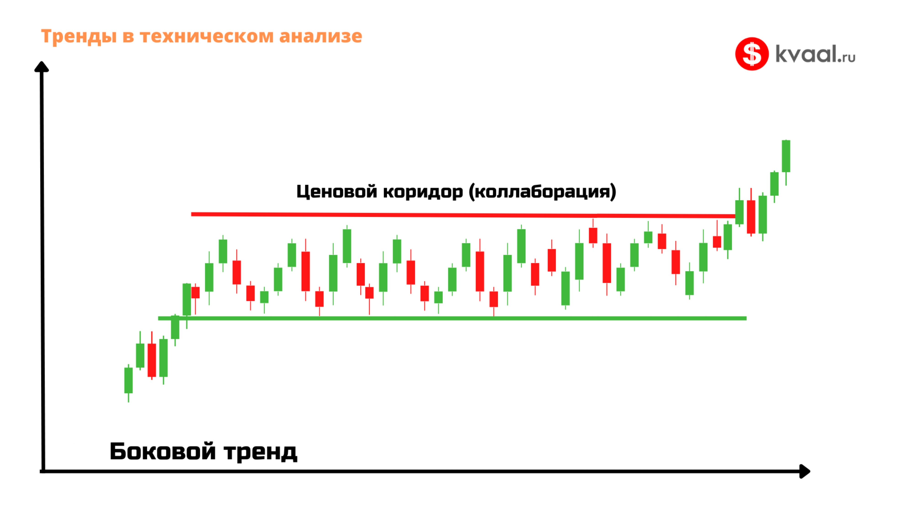

Что такое тренд
Тренд — это общее направление движения цены на выбранном участке графика. «Тренд — твой друг» — это не просто поговорка, это основа прибыльной торговли. Торговать по тренду гораздо безопаснее, чем против него.
Три вида тренда
1. Восходящий (бычий)
Цена делает всё более высокие максимумы и всё более высокие минимумы. Каждая коррекция заканчивается выше предыдущей. Покупатели контролируют рынок.

2. Нисходящий (медвежий)
Цена делает всё более низкие максимумы и всё более низкие минимумы. Каждый отскок заканчивается ниже предыдущего. Продавцы контролируют рынок.

3. Боковой (флэт)
Цена колеблется в горизонтальном диапазоне между уровнями поддержки и сопротивления. Нет явного направления. В такие периоды лучше воздержаться от торговли или использовать стратегии для флэта.

Тренд на разных таймфреймах
Важный нюанс: на разных таймфреймах тренды могут быть разными. Например:
- На дневном графике — восходящий тренд.
- На часовом — нисходящая коррекция.
- На 15-минутном — боковик.
Поэтому всегда уточняйте: о тренде на каком таймфрейме идёт речь. Обычно старший таймфрейм задаёт главное направление, младший — точку входа.
Линии тренда
Чтобы визуально видеть тренд, трейдеры проводят линии тренда:
- Восходящая линия — соединяет минимумы растущей цены. Служит поддержкой.
- Нисходящая линия — соединяет максимумы падающей цены. Служит сопротивлением.
Чем больше касаний линии тренда — тем она сильнее. Пробой линии тренда часто сигнализирует о смене направления.
Смена тренда
Тренд не может длиться вечно. Рано или поздно он меняется. Признаки разворота:
- Пробой линии тренда.
- Образование нового максимума/минимума не в сторону тренда.
- Смена направления на старшем таймфрейме.
- Разворотные свечные паттерны у ключевых уровней.
Что важно уяснить из урока
- Тренд — общее направление цены.
- Три вида: восходящий, нисходящий, боковой.
- На разных таймфреймах тренды могут быть разными.
- Торгуем по тренду, а не против него.
- Смена тренда требует подтверждения.